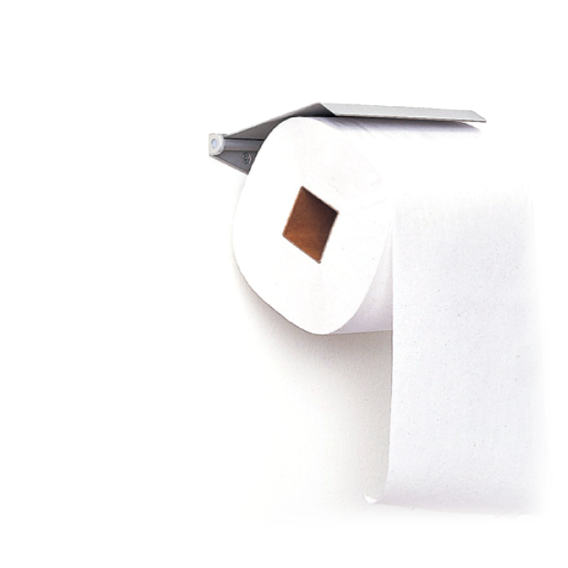

하라 켄야 HARA KENYA
1958년생. 무사시노 미술대학교 교수인 동시에 일본
디자인 센터(Nippon Design Center)와 하라 디자인
연구소(Hara Design Institute) 대표인 하라 켄야는
<리디자인: 일상의 21세기> <햅틱> <센스웨어> 등을
통해 세계적으로 주목받아 왔다. 그는 일본 문화에서
기인하는 자신의 디자인 철학 중 큰 축을 차지하는 ‘공(空)’의
개념을 일본의 세계적 브랜드 ‘무인양품’을 통해 현실화하고
있으며, 2003년 산토리학예 상을 수상한 <디자인의 디자인>,
일본의 미의식을 디자이너의 눈으로 들여다 본 <백> 등 다양한
저술 활동을 통해 디자인 철학을 발전시키고 있다.
デザインは、形や素材の斬新さで聴衆を驚かせる行為ではありません。
디자인은 형태나 재료의 참신함으로 청중을 놀라게 하는 행위가 아닙니다.
それは、日常生活のごくありふれた隙間から驚くべきアイデアを繰り返し抽出する独創性です。
일상생활의 평범함 속에서 놀라운 아이디어를 반복적으로 뽑아내는 것이 바로 독창성입니다.

하라 켄야는 일본의 그래픽 디자이너·무사시노 미술대학 교수·일본 디자인센터
대표이다. 오카야마현 오카야마시 출신으로, 히로니시 초등학교, 아사히나카 초
등학교, 오카야마현 타치오카산조산 고등학교를 거치고, 1983년 무사시노 미술
대학 대학원에서 디자인 전공을 수료했다. 같은 해 일본 디자인 센터에 입사하여
활동하였다. 2001년부터 무인양품(Muji)에서 아트 디렉터로 활동하고 있다. 무
사시노 미술대학에는 2003년 4월 1일에 착임했으며 커뮤니케이션 디자인, 디자
인 론, 그래픽 디자인, 공간 디자인, 브랜딩, 광고 디자인, 포장 디자인, 편집 디자
인을 아우르는 디자인 영역을 커뮤니케이션의 관점에서 종합해나가는 프로젝트
를 진행하고 있다.
그는 익숙한 것을 미지화하여 새롭게 탐구하는 것도 창조라고 보았다. 새로움은
없던 것을 창조하는 것이 아니라 이미 있는 것에서 앎이 미치지 못했던 부분을 깨
닫고 새롭게 인식하는 것이라고 하였다.